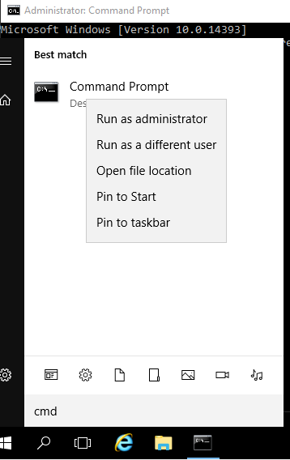
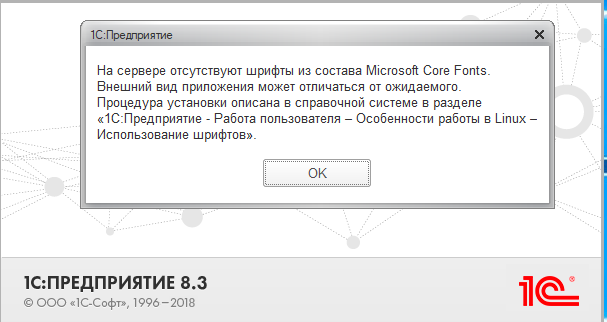
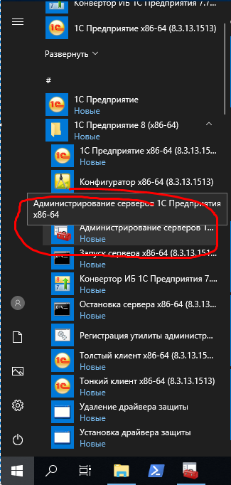
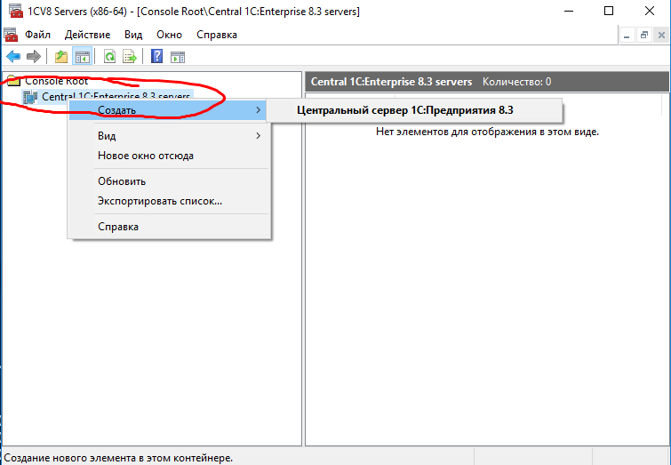
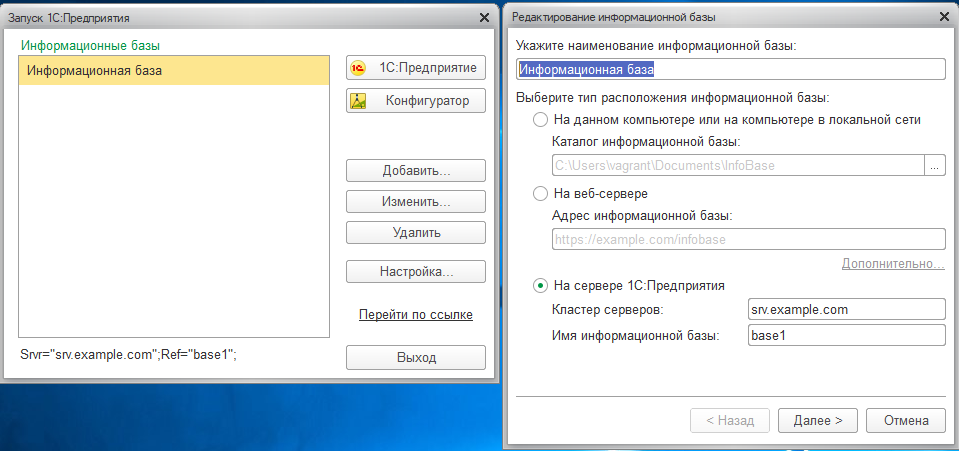
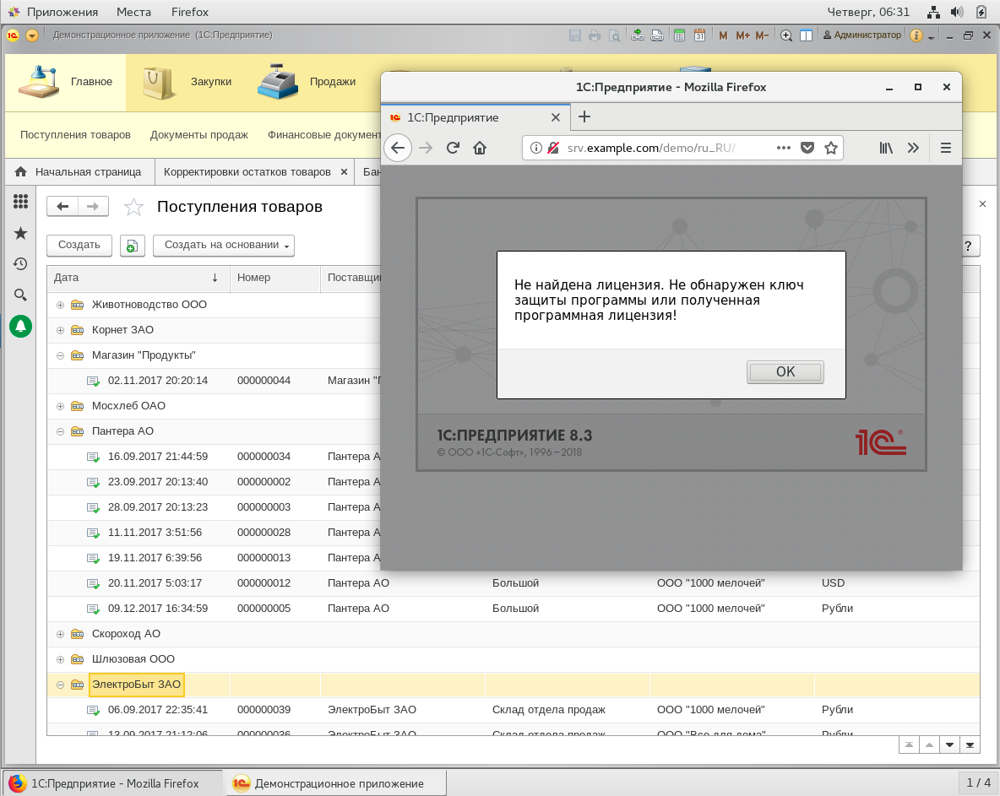

Отделу технического сопровождения в компании "РиК" была поставлена задача импортозамещения программного обеспечения. Одним из шагов в этом направлении было рассмотреть перенос платформы серверов 1С Предприятия на GNU/Linux. Необходимо проверить возможность установить и проверить функционал Платформы 1С:Предприятие исключительно на СПО.
По окончанию данной лабораторной работы вы сможете:
Оглавление
Описание тестовой среды
Предположительное время: 2ч 30 минут
Виртуальные машины: ipa.example.com srv.example.com cl.example.com wincl.domain.com Пояснение: dc.domain.com - используется нами только как инфраструктурный сервер (контроллер домена и dns) для машины wincl. Платформа 1С:Предприятие 8.3 не требует Windows серверов и тем более не требует Active Directory домен
| Логин | Пароль |
|---|---|
| root | redhat |
| vagrant | vagrant |
Перед установкой и настройкой непосредственно компонентов платформы нужно будет
Лабораторная работа предполагет наличие у вас регистрации на оффициальном сайте поставщика программного продукта, а также ранее прикреплённые к вашей учетной записи зарегистрированные программные продукты и из лицензии, используемые в настоящей работе. Практики также предполагают у вас начилие USB-ключа защиты.
Зайдите на оффициальную страницу поставщика дистрибутива https://releases.1c.ru/project/Platform83 из раздела "Технологическая платформа 8.3" и загрузите файлы дистрибутива.
Нам нужны:
8.3.*.*_windows64full.rar - Платформа 1С:Предприятие 64x для Windows8.3.*.*_rpm32-64.zip - rpm-пакеты сервера 1C:Предприятие для GNU/Linux8.3.*.*_clientz.rpm64.zip - rpm-пакеты тонкого и толстого клиентов Платформа 1C:Предприятие для GNU/Linux1cv8.dt - Файл выгрузки (архива) демонстрационной конфигурации. (Необязателен при наличии своей демонстрационной выгрузки СУБД для экспериментов.)Распакуйте архивы с созданием папок по названию архивов и разместите их в каталоге, где находится Vagrantfile демонстрационной среды с подкаталоге c названием packages. (Каталог )
Вот как в итоге должна выглядеть структура.
Запустите эмулятор терминала cmd или cmder и сделайте каталог ipa-lab\vagrant текущим
Дайте команду dir, вы должны увидеть список содержимого каталога vagrant.
c:\VMs\ipa-lab\vagrant
λ dir
...
03.10.2018 21:34 <DIR> .
03.10.2018 21:34 <DIR> ..
28.09.2018 21:31 20 .gitignore
28.09.2018 18:24 <DIR> .vagrant
03.10.2018 21:29 <DIR> distrib
01.10.2018 09:12 <DIR> scripts
03.10.2018 20:12 10 323 VagrantFile
...
Если виртуальные машины ещё не созданы, запустите создание их командой vagrant up.
Если виртуальные машины созданы ранее, то остановите и запустите Linux машины [ipa,srv,cl].example.com с CentOS 7.
c:\VMs\ipa-lab\vagrant
λ vagrant halt "/ipa|srv||^cl/"
...
λ vagrant up "/ipa|srv||^cl/"
...
Проверим, что распакованные в соответствующие архивам папку файлы дистрибутива попали на диски виртуальных машин.
C:\VMs\ipa-lab\vagrant (master -> origin)
λ vagrant ssh ipa --command "ls -al /vagrant/distrib"
total 8
drwxrwxrwx. 1 vagrant vagrant 0 Oct 3 21:29 .
drwxrwxrwx. 1 vagrant vagrant 4096 Oct 3 21:34 ..
drwxrwxrwx. 1 vagrant vagrant 0 Oct 3 21:29 8.3.13.1513_clientz.rpm64
drwxrwxrwx. 1 vagrant vagrant 0 Oct 3 21:29 8.3.13.1513_rpm32-64
drwxrwxrwx. 1 vagrant vagrant 4096 Oct 3 21:29 8.3.13.1513_windows64full
Connection to 127.0.0.1 closed.
C:\VMs\ipa-lab\vagrant (master -> origin)
λ vagrant ssh cl --command "ls -al /vagrant/distrib"
total 8
drwxrwxrwx. 1 vagrant vagrant 0 Oct 3 21:29 .
drwxrwxrwx. 1 vagrant vagrant 4096 Oct 3 21:34 ..
drwxrwxrwx. 1 vagrant vagrant 0 Oct 3 21:29 8.3.13.1513_clientz.rpm64
drwxrwxrwx. 1 vagrant vagrant 0 Oct 3 21:29 8.3.13.1513_rpm32-64
drwxrwxrwx. 1 vagrant vagrant 4096 Oct 3 21:29 8.3.13.1513_windows64full
Connection to 127.0.0.1 closed.
Файлы пакетов дистрибутива попали внутрь жестких дисков виртуальных машин srv.example.com, cl.example.com.
В ОС Microsoft Windows изменения синхронизируемого каталога C:\Vagrant обнаруживуются моментально во время изменения его содержимого благодаря тому, что она монтирует каталог c:\vagrant с помощью SMB протокола. В специальных действиях для синхронизации wincl.domain.comна ОС Microsoft Windows в не нуждается. Откройте окно виртуальной машины wincl.domain.com. Там в обозревателе файлов откройте содержимое каталога C:\vagrant\distrib\8.3.13.1513_windows64full. Вы должны увидеть примерно следующее.

Изначально тестовая среда создавалась для лабораторной работы "Интеграция GNU/Linux IPA с Microsoft Active Directory". В начальном состоянии виртуальные машины не могут разрешать имена доменов example.com. Повторим часть действий по настройке тестовой среды
*.example.comexample.com и domain.com на всех компьютерахЗайдите на ipa, создайте и запустите скрипт, настраивающий IPA домен, DNS сервер и разрешение имен на ipa.example.com машине.
C:\VMs\ipa-lab\vagrant (master -> origin)
λ vagrant ssh ipa
[vagrant@ipa ~]$ sudo -s
[root@ipa vagrant]# su -
[root@ipa vagrant]# cat <<EOF >script.sh
#!/bin/bash
echo -e "Configuring IPA & DNS server: \n"
yum install -y bind bind-utils bind-dyndb-ldap ipa-server ipa-server-dns
yum install -y rng-tools
rngd -r /dev/urandom
# yum update -y
#nmcli conn modify System\ eth0 ipv4.ignore-auto-dns on
#nmcli conn up System\ eth0
sed -i /.*ipa.*/d /etc/hosts
echo "172.25.0.10 ipa.example.com ipa" >> /etc/hosts
ipa-server-install \
--domain=example.com \
--realm=EXAMPLE.COM \
--ds-password=password \
--admin-password=password \
--hostname=ipa.example.com \
--ip-address=172.25.0.10 \
--reverse-zone=0.25.172.in-addr.arpa. \
--forwarder=8.8.8.8 \
--allow-zone-overlap \
--ssh-trust-dns \
--allow-zone-overlap \
--setup-dns \
--unattended
nmcli connection modify 'System eth0' ipv4.ignore-auto-dns yes && nmcli connection up 'System eth0'
EOF
[root@ipa vagrant]# chmod +x script.sh
[root@ipa vagrant]# ./script.sh
Configuring IPA & DNS server:
...
# тут будет много сообщений о настройке IPA сервера и придётся подождать пару минут, не теряйте времени, вы можете пока переходить к следующему заданию, но не забудьте потом вернуться и настроить dns forward.
...
Configured /etc/openldap/ldap.conf
Configured /etc/ssh/ssh_config
Configured /etc/ssh/sshd_config
Configuring example.com as NIS domain.
Client configuration complete.
The ipa-client-install command was successful
Setup complete
Next steps:
1. You must make sure these network ports are open:
TCP Ports:
* 80, 443: HTTP/HTTPS
* 389, 636: LDAP/LDAPS
* 88, 464: kerberos
* 53: bind
UDP Ports:
* 88, 464: kerberos
* 53: bind
* 123: ntp
2. You can now obtain a kerberos ticket using the command: 'kinit admin'
This ticket will allow you to use the IPA tools (e.g., ipa user-add)
and the web user interface.
Be sure to back up the CA certificates stored in /root/cacert.p12
These files are required to create replicas. The password for these
files is the Directory Manager password
Connection successfully activated (D-Bus active path: /org/freedesktop/NetworkManager/ActiveConnection/3)
[vagrant@ipa ~]$ kinit admin
Password for admin@EXAMPLE.COM: <password>
[vagrant@ipa ~]$ ipa dnsforwardzone-add domain.com \
--forward-policy=only \
--forwarder=172.25.0.100 \
--skip-overlap-check
Server will check DNS forwarder(s).
This may take some time, please wait ...
Zone name: domain.com.
Active zone: TRUE
Zone forwarders: 172.25.0.100
Forward policy: only
[vagrant@ipa ~]$ ipa dnsrecord-add example.com srv --a-rec 172.25.0.11
Record name: srv
A record: 172.25.0.11
[vagrant@ipa ~]$ ipa dnsrecord-add example.com cl --a-rec 172.25.0.20
Record name: cl
A record: 172.25.0.20
[vagrant@ipa ~]$
Откроем необходимые порты для FreeIPA сервера в firewalld
[root@ipa root]# firewall-cmd --add-service=http --permanent
[root@ipa root]# firewall-cmd --add-service=https --permanent
[root@ipa root]# firewall-cmd --add-service=freeipa-ldap --permanent
[root@ipa root]# firewall-cmd --add-service=freeipa-ldaps --permanent
[root@ipa root]# firewall-cmd --add-service=freeipa-replication --permanent
[root@ipa root]# firewall-cmd --add-service=freeipa-trust --permanent
[root@ipa root]# firewall-cmd --add-service=kerberos --permanent
[root@ipa root]# firewall-cmd --add-service=dns --permanent
[root@ipa root]# firewall-cmd --add-service=ntp --permanent
[root@ipa root]# firewall-cmd --reload
[root@ipa root]# chattr +i /etc/resolv.conf # Сделаем так, чтобы `vagrant` не смог изменить файл.
[root@ipa vagrant]# logout
[vagrant@ipa ~]$ dig +noall +answer SOA domain.com
domain.com. 3423 IN SOA dc.domain.com. hostmaster.domain.com. 53 900 600 86400 3600
[vagrant@ipa ~]$ dig +noall +answer SRV _ldap._tcp.domain.com
_ldap._tcp.domain.com. 600 IN SRV 0 100 389 dc.domain.com.
[vagrant@ipa ~]$ dig +noall +answer A dc.domain.com
dc.domain.com. 3600 IN A 172.25.0.100
[root@ipa vagrant]# logout
[vagrant@ipa ~]$ logout
Откройте терминал на cl.example.comи настройте локальный резолвер и проверьте разрешение имён dns доменов example.com и domain.com.
Повторите эту же процедуру и для srv.example.com.
C:\VMs\ipa-lab\vagrant (master -> origin)
λ vagrant ssh cl
[vagrant@cl ~]$ sudo -s
[root@cl vagrant]# nmcli connection modify 'System eth1' ipv4.dns 172.25.0.10 && nmcli connection up 'System eth1'
Connection successfully activated (D-Bus active path: /org/freedesktop/NetworkManager/ActiveConnection/4)
[root@cl vagrant]# nmcli connection modify 'System eth0' ipv4.ignore-auto-dns yes && nmcli connection up 'System eth0'
Connection successfully activated (D-Bus active path: /org/freedesktop/NetworkManager/ActiveConnection/5)
[root@cl vagrant]# cat /etc/resolv.conf
# Generated by NetworkManager
search example.com
nameserver 172.25.0.10
options single-request-reopen
[root@ipa root]# chattr +i /etc/resolv.conf # Сделаем так, чтобы `vagrant` не смог изменить файл.
[root@cl ~]$ dig +noall +answer A dc.domain.com
dc.domain.com. 3600 IN A 172.25.0.100
[root@cl ~]$ dig +noall +answer A ipa.example.com
ipa.example.com. 3600 IN A 172.25.0.10
[root@cl vagrant]# logout
[vagrant@cl ~]$ logout
C:\VMs\ipa-lab\vagrant (master -> origin)
λ vagrant ssh srv
[vagrant@srv ~]$ sudo -s
[root@srv vagrant]# nmcli connection modify 'System eth0' ipv4.ignore-auto-dns yes && nmcli connection up 'System eth0'
Connection successfully activated (D-Bus active path: /org/freedesktop/NetworkManager/ActiveConnection/3)
[root@srv vagrant]# nmcli connection modify 'System eth1' ipv4.dns 172.25.0.10 && nmcli connection up 'System eth1'
Connection successfully activated (D-Bus active path: /org/freedesktop/NetworkManager/ActiveConnection/4)
[root@srv vagrant]# cat /etc/resolv.conf
# Generated by NetworkManager
search example.com
nameserver 172.25.0.10
options single-request-reopen
[root@srv root]# chattr +i /etc/resolv.conf # Сделаем так, чтобы `vagrant` не смог изменить файл.
[root@srv ~]$ dig +noall +answer A dc.domain.com
dc.domain.com. 3600 IN A 172.25.0.100
[root@srv ~]$ dig +noall +answer A ipa.example.com
ipa.example.com. 3600 IN A 172.25.0.10
[root@srv vagrant]#
Откройте окно виртуальной машины dc.domain.com и запустите cmd.exe из-под Администратора

Добавьте настройку перенаправления DNS запросов домена example.com на ip-адрес ipa.example.com
Microsoft Windows [Version 10.0.14393]
(c) 2016 Microsoft Corporation. All rights reserved.
C:\Windows\system32>dnscmd /zoneadd example.com /dsforwarder 172.25.0.10 /TimeOut 30
DNS server . version is 10.0.14393
Creating zone in built-in domain directory partition...
DNS Server . created zone example.com:
Command completed successfully.
C:\Windows\system32>
Теперь проверим, что записи dns доменов domain.com example.com разрешаются на Windows 10 машине wincl.domain.com
C:\VMs\ipa-lab\vagrant (master -> origin)
λ vagrant powershell wincl
==> wincl: Detecting if a remote PowerShell connection can be made with the guest...
wincl: Creating powershell session to 127.0.0.1:2205
wincl: Username: vagrant
[127.0.0.1]: PS C:\Users\vagrant\Documents> Resolve-DnsName ipa.example.com
Name Type TTL Section IPAddress
---- ---- --- ------- ---------
ipa.example.com A 1012 Answer 172.25.0.10
[127.0.0.1]: PS C:\Users\vagrant\Documents> Resolve-DnsName dc.domain.com
Name Type TTL Section IPAddress
---- ---- --- ------- ---------
dc.domain.com A 3600 Answer 172.25.0.100
[127.0.0.1]: PS C:\Users\vagrant\Documents>
Теперь настала пора поставить сначала по отдельности клиентскую и серверные компоненты платформы.
Установим Платформу 1С:Предприятие сначала на на машину wincl.example.com с Windows 10 в тестовую среду, чтобы познакомиться с данными, которые мы будем переносить.
На машине
wincl.example.comстоитАнглийская СШАверсия ОС и языкового пакета. Через панель настроек загрузите и поставьте русский языковой интерфейс. После загрузки и установки выйдите и зайдите под пользователемDOMAIN\vagrantс паролемvagrant.
Откройте окно виртуальной машины cl.example.com. В обозревателе файлов найдите C:\vagrant\distrib\8.3.13.1513_windows64full дистрибутив Платформа 1С:Предприятие и запустите установку через запуск setup.exe. Выберите все компоненты для установки.
дайте команду на регистрацию апплета администрирования.
В данной лабораторной работе не рассматривается вопрос лицензирования и решение вопроса лицензий ввиду требования у вас наличия аппаратного ключа. Для того чтобы аппаратный ключ попал в тестовую среду выключите машину. В свойствах оборудования добавьте "USB 3.0" контроллер, включите машину и пробросьте аппаратный ключ.
Запустите 1С:Предприятие и создайте новую базу. Запустите конфигуратор и подгрузите выгрузку демонстрационной конфигурации из файла C:\vagrant\distrib\1cv8.dt
Закройте конфигуратор и запустите 1С:Предприятие. Вы должны получить примерно такое окно программы.

Так мы проверили, что клиентские приложения на Windows 10 работают с базой в локальном файловом режиме.
Теперь проверим клиентские приложения и на Linux
Запустим терминал и поставим пакеты для клиентской части.
C:\VMs\ipa-lab\vagrant (master -> origin)
λ vagrant ssh cl
[vagrant@cl ~]$ sudo ls -al /vagrant/
total 21
drwxrwxrwx. 1 vagrant vagrant 4096 Oct 3 21:34 .
dr-xr-xr-x. 18 root root 239 Oct 3 21:36 ..
drwxrwxrwx. 1 vagrant vagrant 0 Oct 4 00:57 distrib
-rwxrwxrwx. 1 vagrant vagrant 20 Sep 28 21:31 .gitignore
drwxrwxrwx. 1 vagrant vagrant 4096 Oct 3 23:28 scripts
drwxrwxrwx. 1 vagrant vagrant 0 Oct 3 22:40 .vagrant
-rwxrwxrwx. 1 vagrant vagrant 10359 Oct 3 22:36 VagrantFile
[vagrant@cl ~]$ sudo ls -al /vagrant/distrib/8.3.13.1513_clientz.rpm64/8.3.13.1513_client.rpm64/
total 307572
drwxrwxrwx. 1 vagrant vagrant 4096 Oct 3 21:29 .
drwxrwxrwx. 1 vagrant vagrant 0 Oct 3 21:29 ..
-rwxrwxrwx. 1 vagrant vagrant 155291374 Sep 16 09:10 1C_Enterprise83-client-8.3.13-1513.x86_64.rpm
-rwxrwxrwx. 1 vagrant vagrant 22308081 Sep 16 09:10 1C_Enterprise83-client-nls-8.3.13-1513.x86_64.rpm
-rwxrwxrwx. 1 vagrant vagrant 121126374 Sep 16 09:10 1C_Enterprise83-thin-client-8.3.13-1513.x86_64.rpm
-rwxrwxrwx. 1 vagrant vagrant 16219171 Sep 16 09:10 1C_Enterprise83-thin-client-nls-8.3.13-1513.x86_64.rpm
[vagrant@cl ~]$ sudo ls -al /vagrant/distrib/8.3.13.1513_clientz.rpm64/8.3.13.1513_thin.client.rpm64/
total 134128
drwxrwxrwx. 1 vagrant vagrant 0 Oct 3 21:29 .
drwxrwxrwx. 1 vagrant vagrant 0 Oct 3 21:29 ..
-rwxrwxrwx. 1 vagrant vagrant 121126374 Sep 16 09:10 1C_Enterprise83-thin-client-8.3.13-1513.x86_64.rpm
-rwxrwxrwx. 1 vagrant vagrant 16219171 Sep 16 09:10 1C_Enterprise83-thin-client-nls-8.3.13-1513.x86_64.rpm
[vagrant@cl ~]$ sudo cat /etc/resolv.conf
# Generated by NetworkManager
search example.com
nameserver 172.25.0.10
options single-request-reopen
[vagrant@cl ~]$ sudo yum install -y epel-release # Поставим поддержку репозитория EPEL
...
[vagrant@cl ~]$ sudo yum install -y firefox libreoffice #Поставим комплект типовых офисных приложений
...
[vagrant@cl ~]$ mv /vagrant/distrib/8.3.13.1513_rpm32-64/8.3.13.1513_rpm64/1C_Enterprise83-*.rpm /vagrant/distrib/all
[vagrant@cl ~]$ mv /vagrant/distrib/8.3.13.1513_clientz.rpm64/8.3.13.1513_client.rpm64/1C_Enterprise83-client-*.rpm /vagr ant/distrib/all
[vagrant@cl ~]$ cd /vagrant/distrib/all
[vagrant@cl distrib]$ cd all/
[vagrant@cl all]$ ls -al
total 517188
drwxrwxrwx. 1 vagrant vagrant 4096 Oct 4 02:04 .
drwxrwxrwx. 1 vagrant vagrant 4096 Oct 4 02:06 ..
-rwxrwxrwx. 1 vagrant vagrant 155291374 Sep 16 09:10 1C_Enterprise83-client-8.3.13-1513.x86_64.rpm
-rwxrwxrwx. 1 vagrant vagrant 22308081 Sep 16 09:10 1C_Enterprise83-client-nls-8.3.13-1513.x86_64.rpm
-rwxrwxrwx. 1 vagrant vagrant 32932813 Sep 16 09:10 1C_Enterprise83-common-8.3.13-1513.x86_64.rpm
-rwxrwxrwx. 1 vagrant vagrant 6272534 Sep 16 09:10 1C_Enterprise83-common-nls-8.3.13-1513.x86_64.rpm
-rwxrwxrwx. 1 vagrant vagrant 237057486 Sep 16 09:10 1C_Enterprise83-server-8.3.13-1513.x86_64.rpm
-rwxrwxrwx. 1 vagrant vagrant 75461942 Sep 16 09:10 1C_Enterprise83-server-nls-8.3.13-1513.x86_64.rpm
-rwxrwxrwx. 1 vagrant vagrant 230780 Sep 16 09:10 1C_Enterprise83-ws-8.3.13-1513.x86_64.rpm
-rwxrwxrwx. 1 vagrant vagrant 18415 Sep 16 09:10 1C_Enterprise83-ws-nls-8.3.13-1513.x86_64.rpm
[vagrant@cl all]$
[vagrant@cl all]$ sudo yum localinstall 1C_Enterprise83-*.rpm
...
Installing:
1C_Enterprise83-client x86_64 8.3.13-1513 /1C_Enterprise83-client-8.3.13-1513.x86_64 399 M
1C_Enterprise83-client-nls x86_64 8.3.13-1513 /1C_Enterprise83-client-nls-8.3.13-1513.x86_64 189 M
1C_Enterprise83-common x86_64 8.3.13-1513 /1C_Enterprise83-common-8.3.13-1513.x86_64 79 M
1C_Enterprise83-common-nls x86_64 8.3.13-1513 /1C_Enterprise83-common-nls-8.3.13-1513.x86_64 11 M
1C_Enterprise83-server x86_64 8.3.13-1513 /1C_Enterprise83-server-8.3.13-1513.x86_64 459 M
1C_Enterprise83-server-nls x86_64 8.3.13-1513 /1C_Enterprise83-server-nls-8.3.13-1513.x86_64 172 M
1C_Enterprise83-ws x86_64 8.3.13-1513 /1C_Enterprise83-ws-8.3.13-1513.x86_64 530 k
1C_Enterprise83-ws-nls x86_64 8.3.13-1513 /1C_Enterprise83-ws-nls-8.3.13-1513.x86_64 135 k
Installing for dependencies:
libpng12 x86_64 1.2.50-10.el7 base 171 k
...
Installed:
1C_Enterprise83-client.x86_64 0:8.3.13-1513 1C_Enterprise83-client-nls.x86_64 0:8.3.13-1513
1C_Enterprise83-common.x86_64 0:8.3.13-1513 1C_Enterprise83-common-nls.x86_64 0:8.3.13-1513
1C_Enterprise83-server.x86_64 0:8.3.13-1513 1C_Enterprise83-server-nls.x86_64 0:8.3.13-1513
1C_Enterprise83-ws.x86_64 0:8.3.13-1513 1C_Enterprise83-ws-nls.x86_64 0:8.3.13-1513
Dependency Installed:
libpng12.x86_64 0:1.2.50-10.el7
Complete!
[vagrant@cl all]$
[vagrant@cl all]$ cd ..
[vagrant@cl distrib]$ mkdir haspd
[vagrant@cl distrib]$ cd haspd/
[vagrant@cl haspd]$ wget ftp://download.etersoft.ru/pub/Etersoft/HASP/last/CentOS/7/haspd-7.60-eter1centos.x86_64.rpm
[vagrant@cl haspd]$ wget ftp://download.etersoft.ru/pub/Etersoft/HASP/last/CentOS/7/haspd-debuginfo-7.60-eter1centos.x86_64.rpm
[vagrant@cl haspd]$ wget ftp://download.etersoft.ru/pub/Etersoft/HASP/last/CentOS/7/haspd-modules-7.60-eter1centos.x86_64.rpm
[vagrant@cl haspd]$ sudo yum localinstall *.rpm
...
[vagrant@cl haspd]$
[vagrant@cl haspd]$ sudo service haspd build
...
aksparlnx.ko successfully built:
-rw-r--r--. 1 root root 60656 Oct 4 02:15 aksparlnx.ko
depmod: WARNING: -e needs -E or -F
aksparlnx.ko installed into /lib/modules/3.10.0-862.14.4.el7.x86_64/kernel/extra
Теперь зайдём с помощью графического входа нв cl.example.com и попробуем запустить клиентское приложение "Платформа 1C:Предприятие" работающее на Linux.
Перед запуском установим язык GNOME 3 на Русский и добавим русский способ ввода. Выйдем и снова войдём уже с русским интерфейсом. Запустим толстый клиент через меню запуска приложений.
 Клиентская часть работает на Linux!
Клиентская часть работает на Linux!
 Клиент подключается к базе.
Клиент подключается к базе.
Итак клиентская часть платформы 1С:Предприятие работает. Теперь настало время взяться за серверную часть.
Поставим СУБД на сервер. Подключим репозиторий и поставим и преднастроим СУБД.
https://postgrespro.ru/products/1c
https://postgrespro.ru/products/1c_build
C:\VMs\ipa-lab\vagrant (master -> origin)
λ vagrant ssh srv
[vagrant@srv ~]$ sudo rpm -ivh http://1c.postgrespro.ru/keys/postgrespro-1c-centos96.noarch.rpm && sudo yum makecache && sudo yum install postgresql-pro-1c-9.6
...
[vagrant@srv ~]$
После установки дистрибутива для удобства администрирования сервера PostgreSQL рекомендуется прописать необходимые переменные окружения для пользователя postgres. Этот шаг необязателен. Переключимся на пользователя postgres с его окружением:
[vagrant@srv ~]$ sudo -s
[root@srv vagrant]# su - postgres
-bash-4.2$ vi .bash_profile
-bash-4.2$
Открываем файл, в котором зададим необходимые переменные окружения:
vi .bash_profile
Добавляем в этот файл переменные:
export PATH=/usr/pgsql-9.6/bin:$PATH
export MANPATH=/usr/pgsql-9.6/share/man:$MANPATH
Пример результата измененного файла:
[ -f /etc/profile ] && source /etc/profile
PGDATA=/var/lib/pgsql/9.6/data
export PGDATA
export PATH=/usr/pgsql-9.6/bin:$PATH
export MANPATH=/usr/pgsql-9.6/share/man:$MANPATH
# If you want to customize your settings,
# Use the file below. This is not overridden
# by the RPMS.
[ -f /var/lib/pgsql/.pgsql_profile ] && source /var/lib/pgsql/.pgsql_profile
Инициализируем служебные базы данных с русской локализацией (под пользователем postgres).
-bash-4.2$ initdb --locale=ru_RU.UTF-8
The files belonging to this database system will be owned by user "postgres".
This user must also own the server process.
The database cluster will be initialized with locale "ru_RU.UTF-8".
The default database encoding has accordingly been set to "UTF8".
The default text search configuration will be set to "russian".
Data page checksums are disabled.
fixing permissions on existing directory /var/lib/pgsql/9.6/data ... ok
creating subdirectories ... ok
selecting default max_connections ... 100
selecting default shared_buffers ... 128MB
selecting dynamic shared memory implementation ... posix
creating configuration files ... ok
running bootstrap script ... ok
performing post-bootstrap initialization ... ok
syncing data to disk ... ok
WARNING: enabling "trust" authentication for local connections
You can change this by editing pg_hba.conf or using the option -A, or
--auth-local and --auth-host, the next time you run initdb.
Success. You can now start the database server using:
pg_ctl -D /var/lib/pgsql/9.6/data -l logfile start
-bash-4.2$ logout
Запуск сервера PostgreSQL 9.6.
[root@srv vagrant]# systemctl enable postgresql-9.6
postgresql-9.6.service is not a native service, redirecting to /sbin/chkconfig.
Executing /sbin/chkconfig postgresql-9.6 on
[root@srv vagrant]# systemctl start postgresql-9.6
[root@srv vagrant]# systemctl status postgresql-9.6
● postgresql-9.6.service - SYSV: PostgreSQL database server.
Loaded: loaded (/etc/rc.d/init.d/postgresql-9.6; bad; vendor preset: disabled)
Active: active (exited) since Thu 2018-10-04 03:44:45 +07; 5s ago
Docs: man:systemd-sysv-generator(8)
Process: 4162 ExecStart=/etc/rc.d/init.d/postgresql-9.6 start (code=exited, status=0/SUCCESS)
Oct 04 03:44:43 srv.example.com systemd[1]: Starting SYSV: PostgreSQL database server....
Oct 04 03:44:45 srv.example.com postgresql-9.6[4162]: Starting postgresql-9.6 service: [ OK ]
Oct 04 03:44:45 srv.example.com systemd[1]: Started SYSV: PostgreSQL database server..
[root@srv vagrant]#
Изменение настроек сервера PostgreSQL
В файле /var/lib/pgsql/9.6/data/pg_hba.conf изменим строку
host all all 0.0.0.0/0 trusted на host all all 0.0.0.0/0 md5
для возможности пользователю postgres авторизовываться по паролю.
Далее в файле /var/lib/pgsql/9.6/data/postgresql.conf изменяем настройки под наши нужды. Редактируемые настройки:
shared_buffers = 512MB temp_buffers = 16MB work_mem = 128MB maintenance_work_mem = 192MB effective_cache_size = 3GB
Внимание! Подбор данных настроек производится индивидуально и зависит как от характеристик сервера, на котором будет работать сервер PostgreSQL, так и от характеристик информационных баз, которые будут обрабатываться на этом сервере.
Задаем пароль пользователю postgres, для того чтобы была возможность подключаться к серверу удаленно.
[root@srv vagrant]# su - postgres
Last login: Thu Oct 4 03:41:52 +07 2018 on pts/0
-bash-4.2$ psql
psql (9.6.10)
Type "help" for help.
postgres=# ALTER USER postgres WITH ENCRYPTED PASSWORD 'password'; #вместо 'password' поставьте нужный пароль
ALTER ROLE
postgres=# help;
You are using psql, the command-line interface to PostgreSQL.
Type: \copyright for distribution terms
\h for help with SQL commands
\? for help with psql commands
\g or terminate with semicolon to execute query
\q to quit
postgres=# \q
-bash-4.2$ logout
[root@srv vagrant]#
Рестарт сервера PostgreSQL
[root@srv vagrant]# systemctl stop postgresql-9.6
[root@srv vagrant]# systemctl start postgresql-9.6
[root@srv vagrant]# systemctl status postgresql-9.6
● postgresql-9.6.service - SYSV: PostgreSQL database server.
Loaded: loaded (/etc/rc.d/init.d/postgresql-9.6; bad; vendor preset: disabled)
Active: active (exited) since Thu 2018-10-04 04:02:59 +07; 4s ago
Docs: man:systemd-sysv-generator(8)
Process: 4379 ExecStop=/etc/rc.d/init.d/postgresql-9.6 stop (code=exited, status=0/SUCCESS)
Process: 4415 ExecStart=/etc/rc.d/init.d/postgresql-9.6 start (code=exited, status=0/SUCCESS)
Oct 04 04:02:57 srv.example.com systemd[1]: Starting SYSV: PostgreSQL database server....
Oct 04 04:02:59 srv.example.com postgresql-9.6[4415]: Starting postgresql-9.6 service: [ OK ]
Oct 04 04:02:59 srv.example.com systemd[1]: Started SYSV: PostgreSQL database server..
[root@srv vagrant]#
Ура СУБД PostgreSQL 9.6 установлена, преднастроена и работает!
Теперь к базе на srv.example.com можно подключаться под пользователем postgres c паролем password.
Поставим пакеты сервера. Для упрощения настройки и экономии ресурсов тестовой среды и веб-часть и Серверную часть и СУБД будет ставить на один сервер srv.example.com.
Вы можете легко расширить тестовую среду отредактировав Vagrantfile, запустить и преднастроить дополнительные сервера.
Для того, чтобы СУБД PostgreSQL запустилась и работала оптимально и без проблем, временно остановите srv.example.com командой vagrant halt srv и увеличьте количество ресурсов, выделяемых машине. Памяти увеличьте да 6GB, ядра поставьте 4. Запустите машину командой vagrant up srv.
Внимание! Если вы выключите и снова включите машину не через vagrant, то каталог /vagrant будет пуст и вы не сможете поставить пакеты. В таком случае снова остановите сервер через
vagrant halt srvи запустите его черезvagrant up srv.
Поставим пакеты сервера 1С:Предприятие и веб сервер apache
[root@srv vagrant]# # Lets disable SELINUX May be some time later i will not disable SELinux but not this night Dan Walsh https://stopdisablingselinux.com/ , i am sorry but you need to weed some more time.
[root@srv vagrant]# sed -i --follow-symlinks 's/^SELINUX=.*/SELINUX=permissive/g' /etc/sysconfig/selinux && cat /etc/sysconfig/selinux
[root@srv vagrant]# setenforce 0
[root@srv vagrant]# ls -al /vagrant/distrib/all/
total 517188
drwxrwxrwx. 1 vagrant vagrant 4096 Oct 4 02:04 .
drwxrwxrwx. 1 vagrant vagrant 4096 Oct 4 02:10 ..
-rwxrwxrwx. 1 vagrant vagrant 155291374 Sep 16 09:10 1C_Enterprise83-client-8.3.13-1513.x86_64.rpm
-rwxrwxrwx. 1 vagrant vagrant 22308081 Sep 16 09:10 1C_Enterprise83-client-nls-8.3.13-1513.x86_64.rpm
-rwxrwxrwx. 1 vagrant vagrant 32932813 Sep 16 09:10 1C_Enterprise83-common-8.3.13-1513.x86_64.rpm
-rwxrwxrwx. 1 vagrant vagrant 6272534 Sep 16 09:10 1C_Enterprise83-common-nls-8.3.13-1513.x86_64.rpm
-rwxrwxrwx. 1 vagrant vagrant 237057486 Sep 16 09:10 1C_Enterprise83-server-8.3.13-1513.x86_64.rpm
-rwxrwxrwx. 1 vagrant vagrant 75461942 Sep 16 09:10 1C_Enterprise83-server-nls-8.3.13-1513.x86_64.rpm
-rwxrwxrwx. 1 vagrant vagrant 230780 Sep 16 09:10 1C_Enterprise83-ws-8.3.13-1513.x86_64.rpm
-rwxrwxrwx. 1 vagrant vagrant 18415 Sep 16 09:10 1C_Enterprise83-ws-nls-8.3.13-1513.x86_64.rpm
[root@srv vagrant]# mv /vagrant/distrib/all/1C_Enterprise83-client-*.rpm /vagrant/distrib/8.3.13.1513_clientz.rpm64/
[root@srv vagrant]# ls -al /vagrant/distrib/all/
total 343748
drwxrwxrwx. 1 vagrant vagrant 4096 Oct 4 04:08 .
drwxrwxrwx. 1 vagrant vagrant 4096 Oct 4 02:10 ..
-rwxrwxrwx. 1 vagrant vagrant 32932813 Sep 16 09:10 1C_Enterprise83-common-8.3.13-1513.x86_64.rpm
-rwxrwxrwx. 1 vagrant vagrant 6272534 Sep 16 09:10 1C_Enterprise83-common-nls-8.3.13-1513.x86_64.rpm
-rwxrwxrwx. 1 vagrant vagrant 237057486 Sep 16 09:10 1C_Enterprise83-server-8.3.13-1513.x86_64.rpm
-rwxrwxrwx. 1 vagrant vagrant 75461942 Sep 16 09:10 1C_Enterprise83-server-nls-8.3.13-1513.x86_64.rpm
-rwxrwxrwx. 1 vagrant vagrant 230780 Sep 16 09:10 1C_Enterprise83-ws-8.3.13-1513.x86_64.rpm
-rwxrwxrwx. 1 vagrant vagrant 18415 Sep 16 09:10 1C_Enterprise83-ws-nls-8.3.13-1513.x86_64.rpm
[root@srv all]# yum localinstall *.rpm
Loaded plugins: fastestmirror
...
Installing:
1C_Enterprise83-common x86_64 8.3.13-1513 /1C_Enterprise83-common-8.3.13-1513.x86_64 79 M
1C_Enterprise83-common-nls x86_64 8.3.13-1513 /1C_Enterprise83-common-nls-8.3.13-1513.x86_64 11 M
1C_Enterprise83-server x86_64 8.3.13-1513 /1C_Enterprise83-server-8.3.13-1513.x86_64 459 M
1C_Enterprise83-server-nls x86_64 8.3.13-1513 /1C_Enterprise83-server-nls-8.3.13-1513.x86_64 172 M
1C_Enterprise83-ws x86_64 8.3.13-1513 /1C_Enterprise83-ws-8.3.13-1513.x86_64 530 k
1C_Enterprise83-ws-nls x86_64 8.3.13-1513 /1C_Enterprise83-ws-nls-8.3.13-1513.x86_64 135 k
...
Installed:
1C_Enterprise83-common.x86_64 0:8.3.13-1513 1C_Enterprise83-common-nls.x86_64 0:8.3.13-1513
1C_Enterprise83-server.x86_64 0:8.3.13-1513 1C_Enterprise83-server-nls.x86_64 0:8.3.13-1513
1C_Enterprise83-ws.x86_64 0:8.3.13-1513 1C_Enterprise83-ws-nls.x86_64 0:8.3.13-1513
Complete!
[root@srv all]#
Теперь поставим шришты "Microsoft's Core Fonts" на наш сервер. Или может появиться такое окошко при первом подключении.

Почитать об этих шрифтах можно тут http://mscorefonts2.sourceforge.net
[vagrant@srv x86_64]$ sudo yum install -y epel-release
[vagrant@srv x86_64]$ sudo yum install -y curl cabextract xorg-x11-font-utils fontconfig
[vagrant@srv x86_64]$ sudo yum install https://downloads.sourceforge.net/project/mscorefonts2/rpms/msttcore-fonts-installer-2.6-1.noarch.rpm
Запуск сервера 1С.
[root@srv all]# systemctl enable srv1cv83
srv1cv83.service is not a native service, redirecting to /sbin/chkconfig.
Executing /sbin/chkconfig srv1cv83 on
[root@srv all]# systemctl start srv1cv83
[root@srv all]# systemctl status srv1cv83
srv1cv83.service - SYSV: Starts and stops the 1C:Enterprise daemons
Loaded: loaded (/etc/rc.d/init.d/srv1cv83; bad; vendor preset: disabled)
Active: active (exited) since Thu 2018-10-04 04:12:16 +07; 20s ago
Docs: man:systemd-sysv-generator(8)
Process: 4584 ExecStart=/etc/rc.d/init.d/srv1cv83 start (code=exited, status=0/SUCCESS)
Oct 04 04:12:11 srv.example.com systemd[1]: Starting SYSV: Starts and stops the 1C:Enterprise daemons...
Oct 04 04:12:11 srv.example.com su[4597]: (to usr1cv8) root on none
Oct 04 04:12:16 srv.example.com srv1cv83[4584]: Starting 1C:Enterprise 8.3 server: OK
Oct 04 04:12:16 srv.example.com systemd[1]: Started SYSV: Starts and stops the 1C:Enterprise daemons.
[root@srv all]#
Высока вероятность, что сервер не запустится с первого раза, и при попытке запуска Вы получите ошибку вида:
Failed at step EXEC spawning /etc/rc.d/init.d/srv1cv83: Exec format error Чтобы устранить эту ошибку, необходимо в скрипте инициализации сервера указать интерпретатор (например shell или bash), для этого необходимо добавить в начало файла /etc/init.d/srv1cv83 строку:
#!/bin/bash
Затем надо перезагрузить systemd для поиска новых или измененных юнитов:
systemctl daemon-reload
И снова попытаться запустить сервер 1С:Предприятие
systemctl restart srv1cv83.service
Но в нашем примере всё заработало с первого раза и без ошибок.
Установка дополнительных пакетов для корректной работы сервера 1С.
В документации сервера 1С:Предприятия описана утилита config_system, которая необходима для анализа готовности системы к запуску сервера 1С, в частности она помогает обнаружить отсутствующие необходимые пакеты для корректной работы сервера 1С. К сожалению, анализ rmp пакетов (rmp -ql) показал отсутствие данной утилиты в составе дистрибутива сервера 1С версии 8.3.9.1818. На всякой случай поставим пакеты и перезапустим сервисы.
[root@srv all]# yum install fontconfig-devel ImageMagick
...
[root@srv all]# systemctl stop srv1cv83
[root@srv all]# systemctl start srv1cv83
[root@srv all]# systemctl status srv1cv83
srv1cv83.service - SYSV: Starts and stops the 1C:Enterprise daemons
Loaded: loaded (/etc/rc.d/init.d/srv1cv83; bad; vendor preset: disabled)
Active: active (exited) since Thu 2018-10-04 04:17:04 +07; 4s ago
Docs: man:systemd-sysv-generator(8)
Process: 5841 ExecStop=/etc/rc.d/init.d/srv1cv83 stop (code=exited, status=0/SUCCESS)
Process: 5900 ExecStart=/etc/rc.d/init.d/srv1cv83 start (code=exited, status=0/SUCCESS)
Oct 04 04:16:59 srv.example.com systemd[1]: Starting SYSV: Starts and stops the 1C:Enterprise daemons...
Oct 04 04:16:59 srv.example.com su[5913]: (to usr1cv8) root on none
Oct 04 04:17:04 srv.example.com srv1cv83[5900]: Starting 1C:Enterprise 8.3 server: OK
Oct 04 04:17:04 srv.example.com systemd[1]: Started SYSV: Starts and stops the 1C:Enterprise daemons.
[root@srv all]#
Откроем порт для подключения к серверу.
[root@srv all]# systemctl disable firewalld
[root@srv all]# systemctl stop firewalld
[root@srv all]# systemctl mask firewalld
Поставим Веб сервер Платформы 1С:Предприятие
[vagrant@srv ~]$ sudo yum install httpd
[vagrant@srv ~]$ cd /opt/1C/v8.3/x86_64/
[vagrant@srv x86_64]$ ./webinst
1C:Предприятие 8. Утилита публикации веб-клиента
Публикация:
webinst [-publish] websrv -wsdir VirtualDir -dir Dir -connstr connStr [-confPath confPath]
Публикация на основе существующего vrd файла:
webinst [-publish] websrv [-wsdir VirtualDir] -descriptor vrdPath -dir Dir [-connstr connStr] [-confPath confPath]
Удаление публикации:
webinst -delete websrv -wsdir VirtualDir [-dir Dir] [-connstr connStr] [-confPath confPath]
Удаление публикации по существующему vrd файлу:
webinst -delete websrv [-wsdir VirtualDir] -descriptor vrdPath [-dir Dir] [-connstr connStr] [-confPath confPath]
Ключи:
-publish: опубликовать, ключ по умолчанию
-delete: удалить публикацию
websrv
-apache2: публикация Веб-клиента для Apache 2.0
-apache22: публикация Веб-клиента для Apache 2.2
-apache24: публикация Веб-клиента для Apache 2.4
-wsdir VirtualDir: виртуальный каталог
-dir Dir: физический каталог, в который будет отображен виртуальный
-descriptor vrdPath: путь к существующему vrd файлу
-connstr connStr: строка соединения ИБ
-confPath confPath: полный путь к конфигурационному файлу Apache
[vagrant@srv x86_64]$ sudo ./webinst -publish -apache24 -wsdir demo -dir '/var/www/html/demo/' -connstr 'Srvr="srv.example.com:1542";Ref="te st-base"' -confPath /etc/httpd/conf/httpd.conf
Publication successful
[vagrant@srv ~]$ sudo -s
[root@srv vagrant]# systemctl enable httpd
Created symlink from /etc/systemd/system/multi-user.target.wants/httpd.service to /usr/lib/systemd/system/httpd.service.
[root@srv vagrant]# systemctl start httpd
[root@srv vagrant]# systemctl status httpd
httpd.service - The Apache HTTP Server
Loaded: loaded (/usr/lib/systemd/system/httpd.service; enabled; vendor preset: disabled)
Active: active (running) since Thu 2018-10-04 06:01:29 +07; 5s ago
Docs: man:httpd(8)
man:apachectl(8)
Main PID: 4526 (httpd)
Status: "Processing requests..."
CGroup: /system.slice/httpd.service
├─4526 /usr/sbin/httpd -DFOREGROUND
├─4527 /usr/sbin/httpd -DFOREGROUND
├─4528 /usr/sbin/httpd -DFOREGROUND
├─4529 /usr/sbin/httpd -DFOREGROUND
├─4530 /usr/sbin/httpd -DFOREGROUND
└─4531 /usr/sbin/httpd -DFOREGROUND
Oct 04 06:01:29 srv.example.com systemd[1]: Starting The Apache HTTP Server...
Oct 04 06:01:29 srv.example.com systemd[1]: Started The Apache HTTP Server.
[vagrant@srv ~]$ firewall-cmd --add-service=http --permanent
[vagrant@srv ~]$ firewall-cmd --add-service=https --permanent
[vagrant@srv ~]$ firewall-cmd --reload
Сервер 1С:Предприятие поставлен.
Переключимся на Windows10 рабочую станцию wincl.domain.com. И запустим утилиту администрирования серверов Платформы 1С:Предприятия.
 утилиту администрирования серверов Платформы 1С:Предприятия. Запуск.
Необходимо указать имя сервера (прописанное в hosts) и порт 1540 (используется по умолчанию):
 Меню подключения к серверу 1С.
 Свойства подключения к серверу 1С.
Свойства подключения к серверу 1С.
 Окно свойств локального кластера srv.example.com
Окно свойств локального кластера srv.example.com
Для создания нового кластера необходимо указать:
Создание базы на кластере сервера 1С. Необходимо указать:
При необходимости можно отметить пункт «Создать базу с случае ее отсутствия»
 Администратор Серверов: Создание базы в кластере srv.example.com
Администратор Серверов: Создание базы в кластере srv.example.com
 Подключение к серверу из Windows. Сервер: srv.example.com База: Base1
 Подключение к 1С:Предприятие Windows клиентом: Открыта Демо база и работает веб клиент
Подключение к 1С:Предприятие Windows клиентом: Открыта Демо база и работает веб клиент
 Подключение к 1С:Предприятие Linux клиент: Открыта Демо база и работает веб клиент